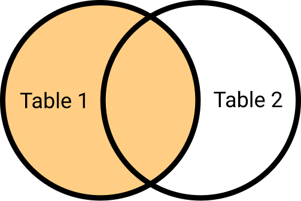
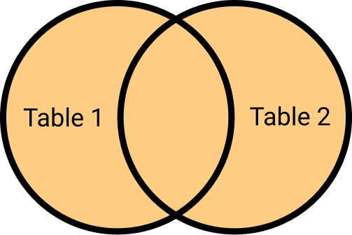

5 Relational Databases
A database is an organized collection of data that can be easily stored, managed, updated, and retrieved. One such type is the relational database, which structures data into tables consisting of rows and columns. Each row, also known as a record, encapsulates information about a single entity, while each column, or attribute, defines a specific aspect of that entity.
Relational databases employ tables and relationships between these tables to store data. A row signifies a unique instance of a table’s subject, while a column represents a distinct characteristic of the subject.
For example, consider the following table:
| Student ID | Student Name | HW1 | HW2 | MidTerm |
|---|---|---|---|---|
| 20101002 | Nikita | 88 | 100 | 76 |
| 20101003 | Nelson | 78 | 98 | 100 |
| 20101004 | Parsa | 98 | 99 | 95 |
| 20101005 | Shivani | 56 | 80 | 76 |
When rows from one table can be associated with rows in another table, the tables are understood to share a relationship.
5.1 Relationship Types
5.1.1 One to One (1:1)
In a one-to-one relationship, a single row in the first table corresponds to just one row in the second table, and vice versa. For example, the relationship between Countries and their respective Capitals:
5.1.2 One to Many (1:M)
In a one-to-many relationship, a single row in the first table can be linked to multiple rows in the second table, but a row in the second table is related to only one row in the first table. For instance, one Professor can teach several Classes:
5.1.3 Many to Many (M:N)
In a many-to-many relationship, a single row in the first table can be associated with many rows in the second table, and similarly, a row in the second table can be associated with many rows in the first table. For example, multiple Students can be enrolled in multiple Classes:
5.2 The Concept of Keys
A Primary Key (PK) is a unique identifier for each row within a table; every table should possess a primary key. To establish relationships between tables, we integrate PKs from one table into another, where they become Foreign Keys (FKs). These FKs allow us to draw connections between related entities across different tables.
Keys
| ClassID (PK) | ProfessorID (FK) | Credits | Location |
|---|---|---|---|
| 620-01 | 1 | 4 | LM-340 |
| 623-01 | 2 | 2 | UM-102 |
| 663-01 | 2 | 2 | LO-234 |
| ProfessorID (PK) | Professor |
|---|---|
| 1 | Arman |
| 2 | Alessandra |
5.3 Types of Joins
In relational databases, a join operation is employed to merge two or more tables based on a related column between them. There are several types of joins. To exemplify how joins operate, we will use two tables: employees and projects. The employees table includes employee_id (Primary Key) and name, while the projects table contains project_id (Primary Key) and employee_id (Foreign Key).
knitr::kable(employees, caption = "Employees Table")
knitr::kable(projects, caption = "Projects Table")| employee_id | name |
|---|---|
| 1 | John |
| 2 | Jane |
| 3 | Bob |
| 4 | Alice |
| 5 | Tom |
| project_id | employee_id |
|---|---|
| 1 | 1 |
| 2 | 2 |
| 3 | 3 |
| 4 | 1 |
| 5 | 4 |
| 6 | 6 |
5.3.1 Outer Joins
Outer joins are utilized to return matched data and unmatched data from one or both tables, effectively creating a more comprehensive table.
5.3.1.1 Left Join
A left join retrieves all the rows from the left table and only the matched rows from the right table. Essentially, it enriches the left table with additional information.

left_join_result <- employees %>%
left_join(projects, by = "employee_id")| employee_id | name | project_id |
|---|---|---|
| 1 | John | 1 |
| 1 | John | 4 |
| 2 | Jane | 2 |
| 3 | Bob | 3 |
| 4 | Alice | 5 |
| 5 | Tom | NA |
5.3.1.2 Right Join
A right join operates similarly to a left join, but it retrieves all the rows from the right table and only the matched rows from the left table.
right_join_result <- employees %>%
right_join(projects, by = "employee_id")# echo: false
knitr::kable(right_join_result, caption = "Result of Right Join")| employee_id | name | project_id |
|---|---|---|
| 1 | John | 1 |
| 1 | John | 4 |
| 2 | Jane | 2 |
| 3 | Bob | 3 |
| 4 | Alice | 5 |
| 6 | NA | 6 |
5.3.1.3 Full Join
A full join returns all the rows from both tables, filling non-matching rows with null values. It essentially merges both tables.

full_join_result <- employees %>%
full_join(projects, by = "employee_id")| employee_id | name | project_id |
|---|---|---|
| 1 | John | 1 |
| 1 | John | 4 |
| 2 | Jane | 2 |
| 3 | Bob | 3 |
| 4 | Alice | 5 |
| 5 | Tom | NA |
| 6 | NA | 6 |
5.3.1.4 Inner Join
An inner join only returns the matched rows between two tables. Thus, only the rows that found a match in both tables will be retained.

inner_join_result <- employees %>%
inner_join(projects, by = "employee_id")| employee_id | name | project_id |
|---|---|---|
| 1 | John | 1 |
| 1 | John | 4 |
| 2 | Jane | 2 |
| 3 | Bob | 3 |
| 4 | Alice | 5 |
5.3.2 Filtering Joins
5.3.2.1 Anti Join
An anti join returns the rows from the left table that do not find a corresponding match in the right table, without adding any new columns to the output. It’s useful when you want to filter rows based on the absence of matching entries in the other table.
anti_join_result <- employees %>%
anti_join(projects, by = "employee_id")
# knitr::kable(anti_join_result, caption = "Result of Anti Join")| employee_id | name |
|---|---|
| 5 | Tom |
Tom does not have a project assigned! Perhaps he could take on project 6?
5.3.2.2 Semi Join
A semi join is akin to an inner join in identifying matching rows between two tables. However, unlike an inner join, it does not add any new columns to the output. Instead, it filters the rows from the left table that have a corresponding match in the right table. You’d use a semi join when you want to filter the left table based on the presence of matching entries in the right table.
semi_join_result <- employees %>%
semi_join(projects, by = "employee_id")| employee_id | name |
|---|---|
| 1 | John |
| 2 | Jane |
| 3 | Bob |
| 4 | Alice |
5.4 Visualizing Databases
We’re going to Unified Modeling Language (UML) to visualize relationships in databases. This might be your first time hearing that there is a language behind diagrams. UML is a standard graphical notation to describe software designs. It is a powerful tools for planning, visualizing and documents your projects. There are different types of diagrams to depict structures, behaviors and interactions with the standard set of symbols and notation.
UML coding tools like Mermaid and Graphviz are great options, but I find that drag-and-drop web applications such as LucidChart and Draw.io are more user-friendly. First, let’s introduce an entity, which is an object (place, person, thing) that we want to track in our database. In our case, these will be a customer, order, and product. Each entity possesses attributes, for example, a customer has customer_id, name, email, address, etc., and other entities also have a list of attributes. These entities and attributes are represented as rows and columns, respectively, in your tables. Tables can be interconnected, and these relationships are visualized by drawing a line between the tables. Cardinality is used to describe these relationships in numeric terms, akin to our discussion in sec-relationships.

For instance, let’s examine the relationship between a customer and an order. We ask: what is the relationship between a customer and an order? Using the min, max framework, what is the minimum and maximum number of orders a customer can have? A customer can have zero orders (min = 0) and an indefinite amount of orders (max = many). So, the relationship from customer to order is 0 or many. Now, let’s look in the opposite direction: how many customers can an order have? An order can have only one customer (min = 1, max = 1).

Next, let’s examine the relationship between an order and a product. An order can include one or many products, and each product can be in zero or many orders. The complete diagram would resemble the following:

Creating such a diagram is recommended whenever you’re planning a project with a complex design. It clarifies the necessary tables and their relationships. You could also sketch a diagram whenever you’re unsure about a data set. If you’d like to delve deeper into this topic, check out the Lucid Software YouTube guides and Neso Academy’s Database Management Systems course.
Practical tools for modern research - 5 Relational Databases Practical tools for modern research - 5 Relational Databases Practical tools for modern research - 5 Relational Databases Practical tools for modern research